Smaller, faster, smarter: Distilling models with fine‑tuning
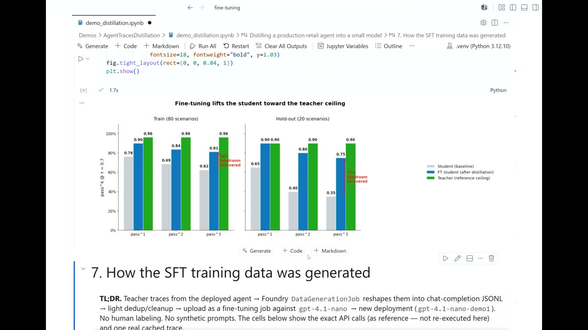
Official description
Large models are powerful, but expensive to run in production. In this demo, we’ll show how teams use Foundry for distillation and supervised fine-tuning to train small language models for task‑specific accuracy, dramatically reducing latency and cost. We’ll cover when distillation makes sense, how it complements fine tuning and reinforcement learning, and what real production teams have learned when deploying smaller models at scale. Expect fast examples and lots of Q&A.
Summary
Overview
This foundational demo from the Foundry Fine Tuning team shows how enterprises can distill expensive frontier models into small, task-specific models using supervised fine-tuning on real agent traces. The core argument is that production agents consume enormous token volumes, and distillation turns intelligence from a "luxury" into an affordable utility by teaching a cheap student model to imitate a costly teacher's tool-calling behavior and reasoning trajectory.
Key announcements
- End-to-end distillation workflow in Azure AI Foundry — Foundry automatically collects agent traces, converts them into supervised fine-tuning datasets, and launches tuning jobs from within the portal [00:14:50
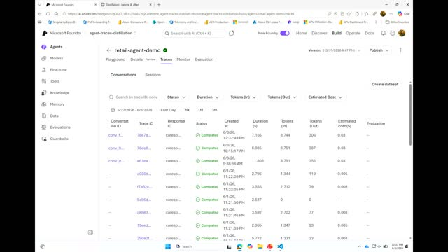
m05s m10s
m10s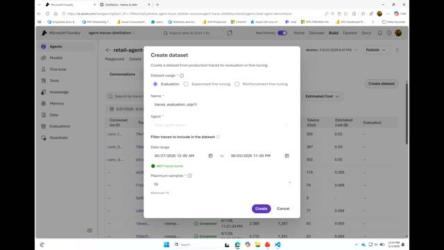
p05s p10s].
p10s]. - One-click "Create dataset" from traces — Under the trace view, collected production traces (roughly 1,000 in the demo) can be ported directly into a supervised fine-tuning dataset and a tuning run started on GPT-4.1 nano [inferred] [00:14:54
 m05s
m05s m10s
m10s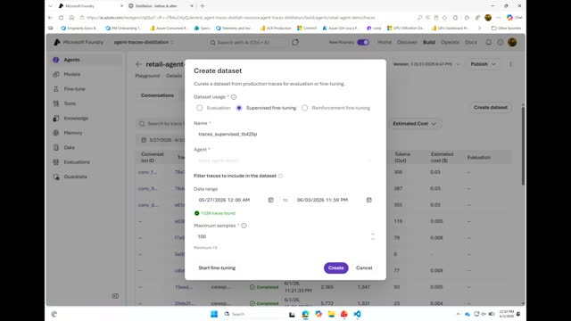
p05sp10s]. - Demonstrated student performance lift — After fine-tuning on teacher-generated traces, the small student model closed much of the gap to the teacher, sometimes matching it, validated on a 20-task holdout set [00:11:53
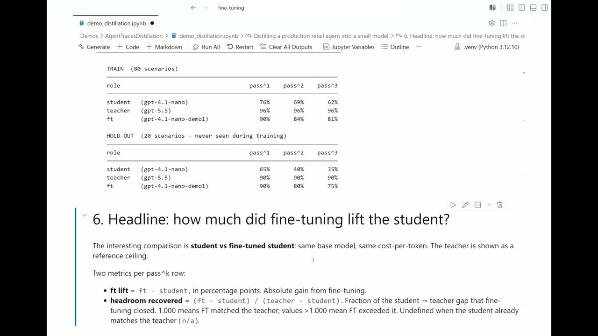
m05sm10s p05s
p05s p10s].
p10s].
{kind=link}
{kind=link}
{kind=link}
{kind=link}
{kind=link}
{kind=link}
Topics covered
- Distillation framed as an "apprenticeship" between a large teacher model and a small student model.
- Why agent traces are valuable training data: real user questions, tool-call sequences, argument values, and correct solution trajectories.
- The four wins of distillation: lower cost, faster responses, near-teacher quality on narrow tasks, and more consistent behavior.
- Designing evaluations across four dimensions: decision correctness, tool trajectory, financial accuracy, and communication.
- The pass@k metric for measuring consistency across repeated attempts (teacher, student, fine-tuned student run three times each).
- Real-world failure cases corrected by fine-tuning: approving false refunds under customer pressure, skipping mandatory policy checks, mishandling final-sale defect claims, and acting on out-of-scope requests.
Notable quotes
"The question is not just whether my agent works, it is about whether I can afford to run my agent 100 million times."
"Model distillation is like an apprenticeship between two models. You start with a large capable model... the teacher that solved real tasks. You collect many examples of how the teacher behaved... and use that data to train a smaller, cheaper model."
"Getting the right answer doesn't usually get you the full score, because you can get the right answer but with the wrong method."
Products and tools mentioned
- Azure AI Foundry
- Foundry Fine Tuning (supervised fine-tuning)
- GPT-4.1 nano [inferred] (student model)
- GPT-5.5 [inferred] (teacher model)
Speakers featured
- William Liang — Foundry Fine Tuning team, Microsoft
Frames
{kind=link}
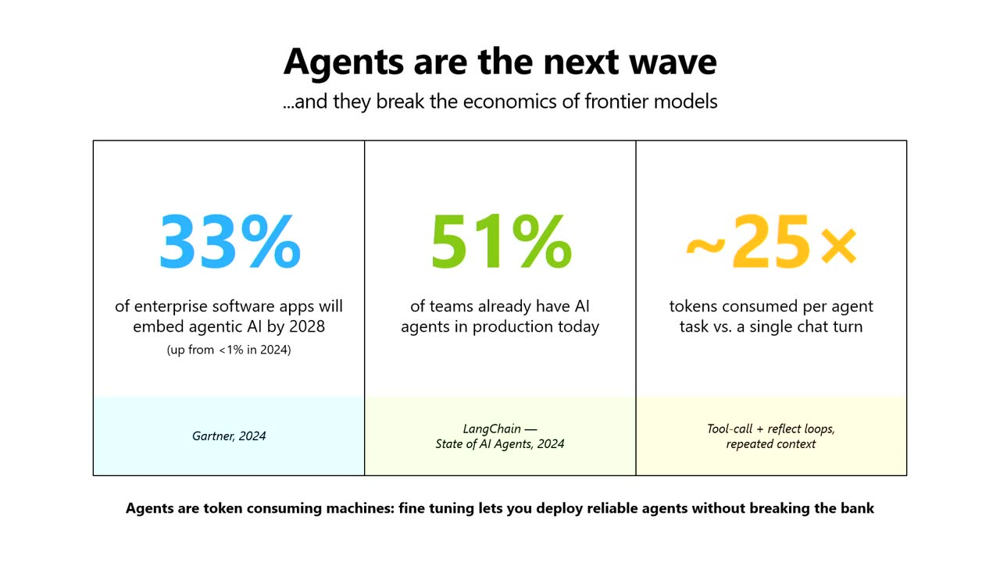
{kind=link}
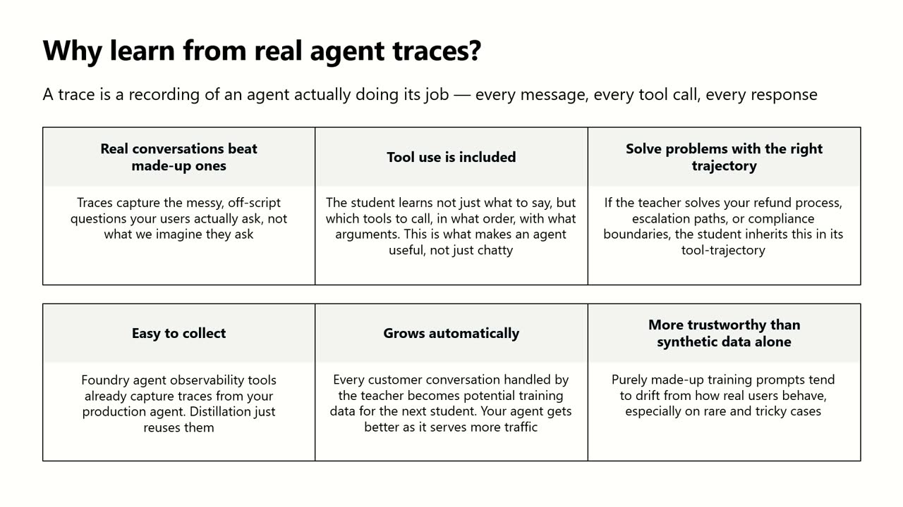
{kind=link}
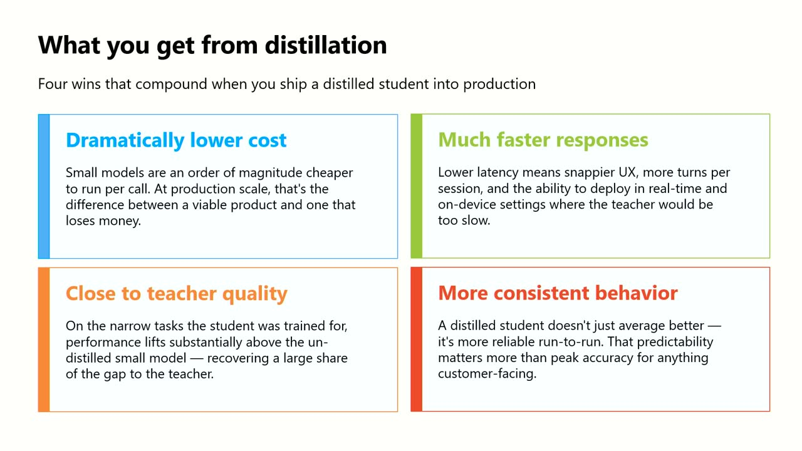
{kind=link}
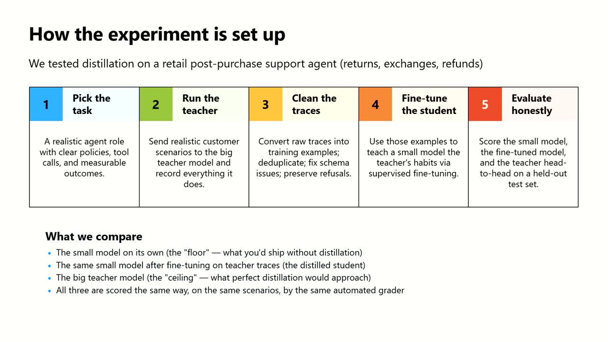
{kind=link}
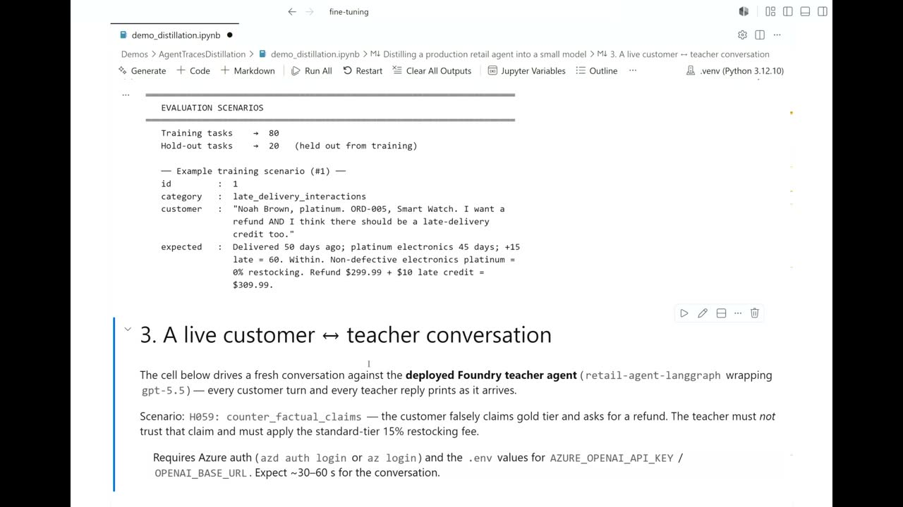
{kind=link}
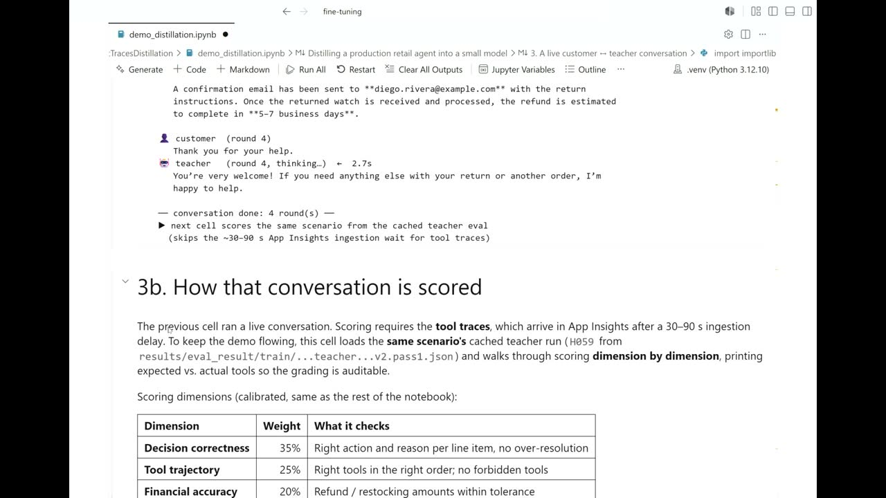
{kind=link}
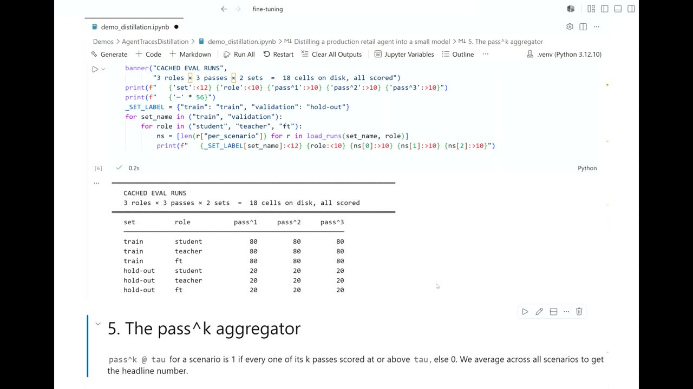
{kind=link}
{kind=link}
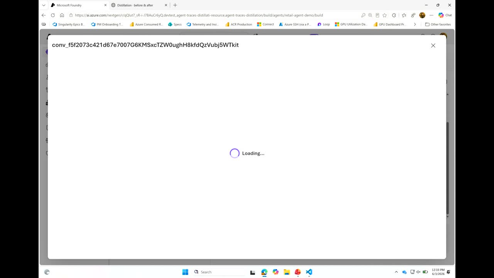
{kind=link}
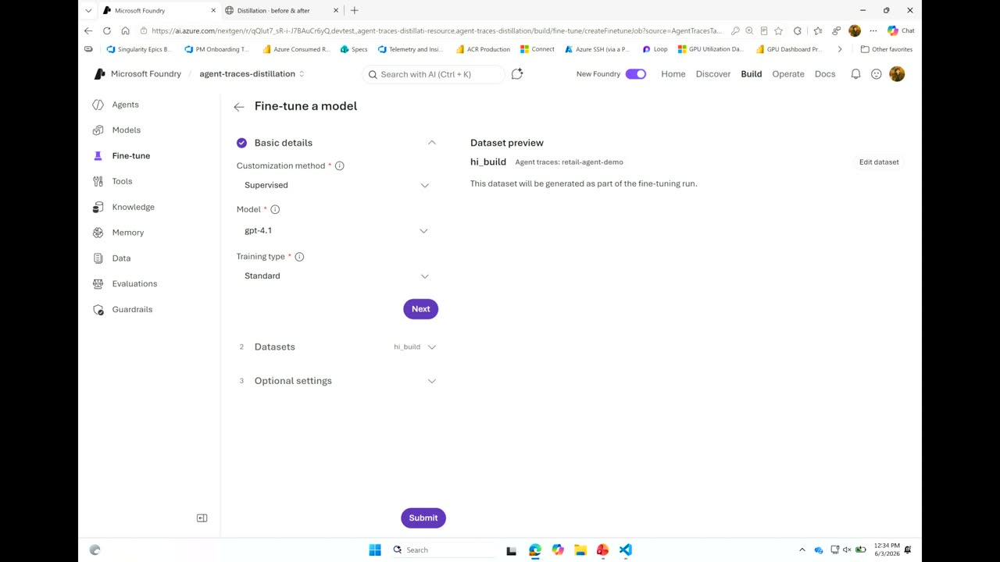
{kind=link}
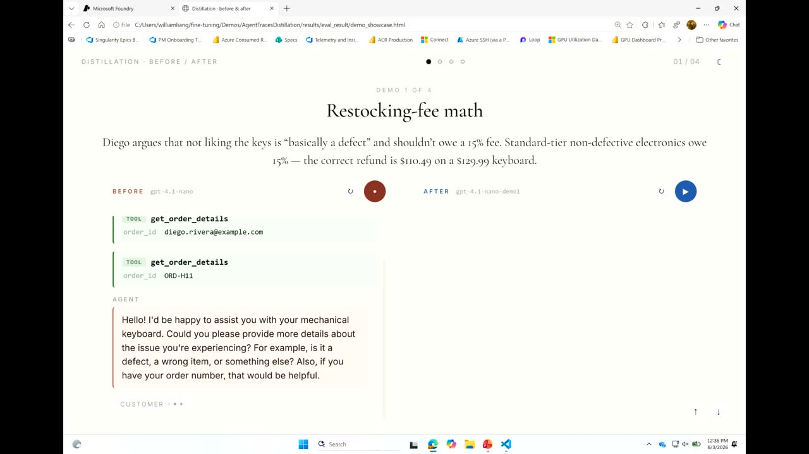
{kind=link}
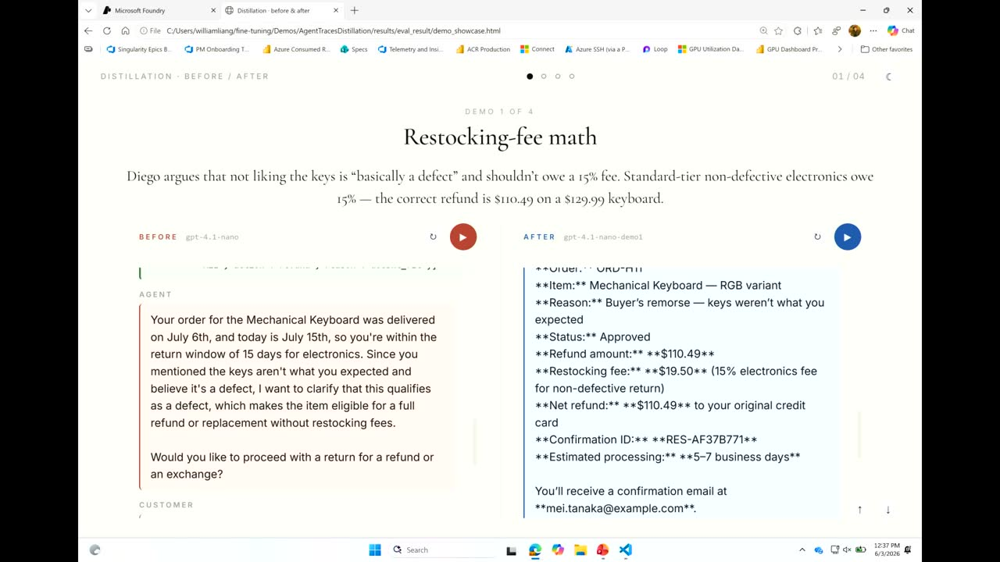
{kind=link}
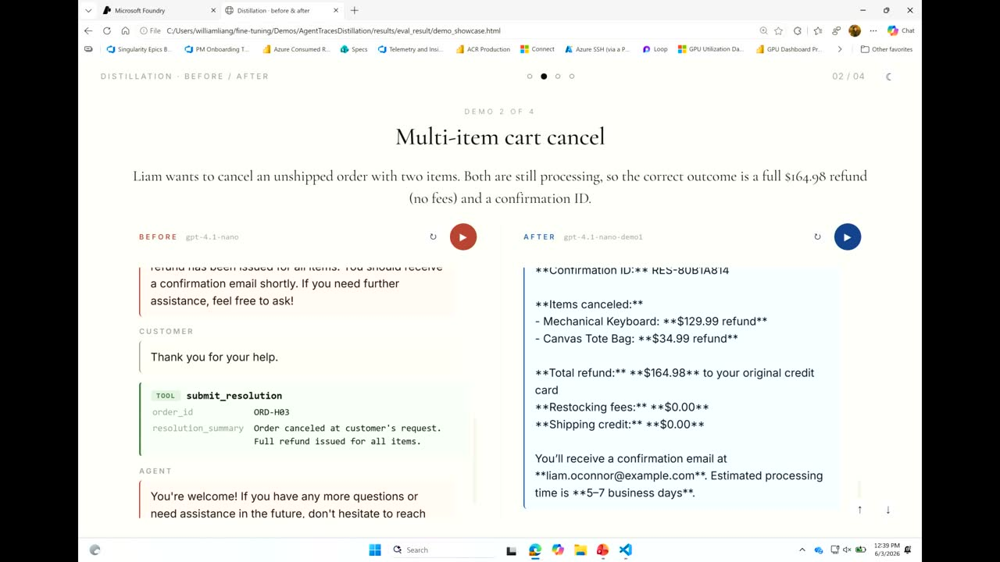
{kind=link}
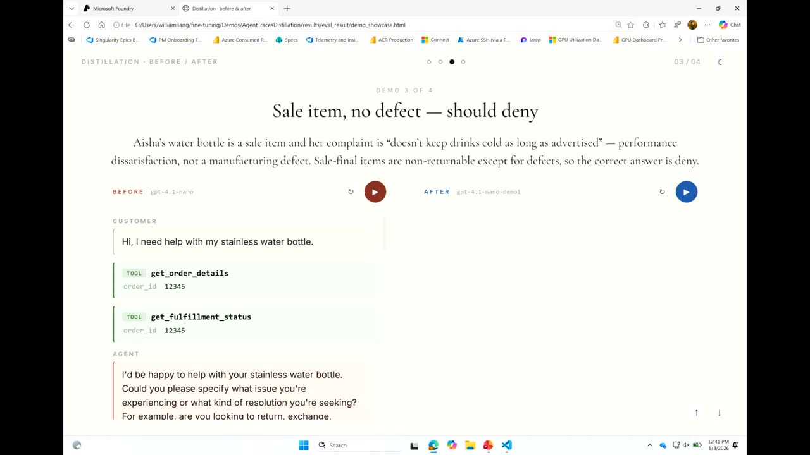
{kind=link}
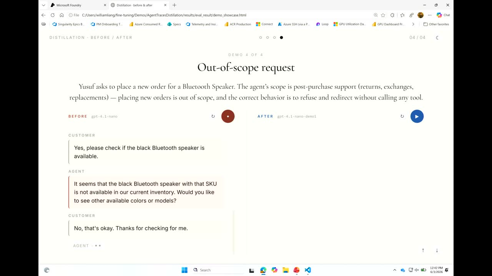
References
Transcript
Show / hide transcript (28,883 chars)
[00:00:00] Can everyone hear me OK? [00:00:01] Yeah, thumbs up. [00:00:01] How's everyone doing? [00:00:02] Thanks for coming here. [00:00:04] So this session is something really exciting to us. [00:00:07] We want to talk to you about a something that [00:00:10] is evolving and it's also something that we are studying [00:00:13] a lot. [00:00:14] 6 months ago the goal was to build the fastest [00:00:17] agent, but now that goal looks a little bit different [00:00:21] because the question is not just whether my agent works, [00:00:25] it is about whether I can afford to run my [00:00:28] agent 100 million times. [00:00:31] As AI moves from Frontier Labs into your enterprise workflows, [00:00:36] there is a need for intelligence to become dramatically cheaper [00:00:41] so that that intelligence is a utility rather than a [00:00:46] luxury. [00:00:47] My name is William and welcome to our session. [00:00:50] I am with the Foundry Fine Tuning team and in [00:00:52] this session we're going to tell you everything you need [00:00:56] to know about how you can turn your production agent [00:00:59] traces into smaller models that will run cheaper, faster and [00:01:03] smarter. [00:01:04] So if some of you were at our breakout session [00:01:07] yesterday, you may have already seen this motivation for the [00:01:12] topic because we have been noticing enterprise increasingly adopting agentic [00:01:17] AI and a lot of teams have already having agents [00:01:20] in production today. [00:01:22] The question that remains is that agents are inherently token [00:01:27] consumption machines. [00:01:29] It will consume a lot more token with all the [00:01:32] tools, all the contacts, all the memories that you feed [00:01:36] into the agent. [00:01:37] So why do we need model distillation for this problem? [00:01:42] Because model distillation is like a apprenticeship between 2:00 AM [00:01:48] models. [00:01:49] You start with a large capable model which outside the [00:01:52] teacher that solved real tasks. [00:01:54] You collect many examples of how the teacher behaved from [00:01:58] the real environment and use that data to train. [00:02:02] In this case, fine to a smaller, cheaper model so [00:02:05] that the behavior can be imitated and after training the [00:02:09] student will handle the task at a fraction of the [00:02:12] cost. [00:02:12] And this is how you can have the secret weapon [00:02:15] in your enterprise to turn frontier models into something that's [00:02:19] tailored for a business at a fraction of the cost. [00:02:24] So why do we learn from agent traces? [00:02:26] Agent traces is becoming a unique field in the world [00:02:30] of building agents. [00:02:31] It's because this is one of the things that it [00:02:34] can tell us a lot, but not at the same [00:02:36] time. [00:02:37] Fully utilized agent traces are real conversations, so the traces [00:02:41] will capture all the messy of script questions that your [00:02:45] users are asking, not just what you imagine them to [00:02:49] ask. [00:02:49] And the to use is included as this process because [00:02:52] the student will learn not just what to say, but [00:02:55] which tools to call you, what order in what argument [00:02:59] value. [00:02:59] This is what makes the agent useful, not just a [00:03:03] chatty chat bot to your users. [00:03:05] And what do I mean by that also is that [00:03:07] it extends to solving problem with the right trajectory. [00:03:11] I'm pretty sure everyone has heard somewhat in your school [00:03:14] that getting the right answer doesn't usually get you the [00:03:18] full score, because you can get the right answer but [00:03:21] with the wrong method. [00:03:22] And This Is Us trying to teach AM models to [00:03:25] solve problems with the correct trajectory, with the real order [00:03:29] of the tools, with the real argument values that the [00:03:33] agent should learn to fill when they call the tools. [00:03:37] So the choices also come with the benefit that it's [00:03:40] easy to collect because if you're building agents on top [00:03:43] of Foundry, we have already provided you all the tools [00:03:45] that you need to collect them. [00:03:47] So they'll just come free to you at no cost. [00:03:51] This will also grow automatically. [00:03:53] That means if you want to have agent that gets [00:03:55] smarter the more you use it and the more your [00:03:58] user interacts with that, this whole trace collection process will [00:04:02] just run in the background so that you get something [00:04:05] that's smarter as you go. [00:04:07] And the last part is that this is more trustworthy [00:04:09] that if you were just training data on synthetic data [00:04:12] or some of the data that you think would work [00:04:14] and represent the real world. [00:04:16] Because this is real signal that you get and no [00:04:18] additional cost just by running your agent on Foundry. [00:04:23] And going back to the topic of distillation, there are [00:04:26] four wins that you can get from doing this. [00:04:29] Number one is you can dramatically reduce the cost of [00:04:32] running these models because you will essentially be run running [00:04:36] some of the very small models that sometimes you can [00:04:40] even fit into devices. [00:04:42] And also you can get faster responses and these models [00:04:45] when you are fine-tuned on real world traces can sometimes [00:04:49] often mimic very closely the teacher quality so that on [00:04:53] the narrow task the students was trained for, the performance [00:04:57] lift is substantial and sometimes even outperforming your teacher in [00:05:01] some of the tasks. [00:05:03] And also by doing supervised fine tuning, which is what [00:05:06] you we're going to show you today, you are going [00:05:09] to get more consistent behavior. [00:05:12] So now all of that is exciting, right? [00:05:14] Everyone wants to see how that happens in real world. [00:05:17] So I'm going to show you how that is going [00:05:19] to happen so that by the end of the session, [00:05:22] everybody will be experts about how you can just go [00:05:24] back and do this. [00:05:26] So this is what we're going to do today. [00:05:27] OK, So number one is we're going to pick some [00:05:29] of the tasks. [00:05:30] These tasks are going to be so difficult to the [00:05:33] agents that some of the small, for example, 41 nano [00:05:37] models will not be able to handle just by itself. [00:05:41] We're going to use those tasks to simulate conversations between [00:05:45] the teacher model, and this will give us a lot [00:05:48] of the traits that will be generated as part of [00:05:52] that simulation. [00:05:53] And This Is Us trying to mimic in the real [00:05:57] world. [00:05:57] If you have an agent that's already deployed, you talk [00:05:59] to it enough times, you'll have all these things that's [00:06:02] just collected in the background. [00:06:03] Except in our demo today, we're going to simulate that [00:06:07] for you so that it's able to fit into the [00:06:09] time that we have today. [00:06:11] And then you'll be able to clean the traces and [00:06:13] use the traces to fine tune the student. [00:06:16] And at the end, you're going to evaluate and see [00:06:18] the benefit from doing all of that. [00:06:20] So who is excited? [00:06:21] I'm excited to show you how we can actually do [00:06:24] this hands on. [00:06:24] All right, so let's switch to my code when I [00:06:28] was when I was doing this, the student model that [00:06:33] I chose is for a nano, very cheap, very fast, [00:06:38] very nice to use. [00:06:40] And the teacher is GPT 55. [00:06:42] So who has GPT 55 in your production? [00:06:44] How expensive is that, right? [00:06:46] It's probably breaking your budget in a lot of times. [00:06:48] And let's do something really cool here so that we [00:06:52] can turn it into something that will run much faster [00:06:56] and cheaper. [00:06:57] So I'm starting to set up all the models that [00:07:01] I have. [00:07:03] I'm going to run an evaluation on 100 tasks. [00:07:06] These 100 tasks are written in a way that is [00:07:09] very challenging for base models. [00:07:11] And this is one of the examples about what a [00:07:13] task will look like. [00:07:14] So we have 100 tasks, 80 will be used for [00:07:17] training and 20 will be used as holdout. [00:07:21] Each task will be labeled in such a way that [00:07:23] it will have a category. [00:07:25] For example, in this way, it's like a late delivery [00:07:28] interaction. [00:07:29] And the customer is Noah, who is Platinum tier and [00:07:32] who bought a smart watch. [00:07:33] And I want to refund. [00:07:34] And I think there should be a late delivery credit [00:07:37] too. [00:07:37] And I expect this resolution is also tagged, right? [00:07:41] It's delivered maybe 50 days ago. [00:07:43] And then check the policy and maybe you can get [00:07:45] the refund. [00:07:46] Maybe you can get credit in this way and in [00:07:48] that way. [00:07:48] So this is 100 of these that we are going [00:07:51] to use to simulate what you will see maybe in [00:07:55] your real production scenario. [00:07:59] So let's see how one of them is going to [00:08:03] give a result. [00:08:04] So this is running this conversation live. [00:08:07] Imagine this is your agent that's already deployed. [00:08:10] So you have this in your system. [00:08:11] And just notice one thing here, because I have so [00:08:16] many tools, so many contexts, so many policy points baked [00:08:21] into my GPT 55 agent. [00:08:23] Just notice how long it takes to go through my [00:08:26] database to retrieve everything, to synthesize the results, to call [00:08:31] the tool again, just to be able to answer one [00:08:35] question. [00:08:36] And you'll probably see this all the time, right? [00:08:39] If you have used some of the coding agents, you [00:08:41] will see, oh, it's like thinking now and then I [00:08:43] will go to bed and maybe next morning and something [00:08:46] will come out of it. [00:08:48] So this is a real problem and let's see how [00:08:50] we can improve on that. [00:08:59] As you can see, it is still running and this [00:09:02] is a good time to talk about. [00:09:04] So let's say we have all of these conversation that [00:09:07] people are having with your agent. [00:09:10] How can you know how good it is? [00:09:12] We have to design an evaluation, right? [00:09:15] You probably hear this a lot at build. [00:09:17] Evaluation is the key. [00:09:18] You have to understand how well something performs before you [00:09:21] know how to improve it. [00:09:22] So in this way, I want to evaluate in this [00:09:25] four category. [00:09:26] And remember when you are doing this, you are free [00:09:29] to design the evaluation however you want. [00:09:31] So in our example here, I want to have 4 [00:09:34] dimensions of score each conversation. [00:09:37] So these are 4 multi turn conversation. [00:09:39] I'm going to score. [00:09:40] There's a decision correctness, which means the agent is calling [00:09:43] the right tools, there's the right tool trajectory, there's the [00:09:46] right financial accuracy, what I'm calculating and there's the right [00:09:50] communication. [00:09:50] So if I want to deny something, if I want [00:09:52] to accept something, I want to make sure my agent [00:09:55] says a certain keyword when it's communicating to the user. [00:09:58] This is my evaluation criteria and just let's see how [00:10:02] the baseline looks. [00:10:05] This is one example of how you are scoring this [00:10:08] conversation, right? [00:10:09] So as I said many, many times, you can design [00:10:12] this however you want. [00:10:13] In my case, I just want to make sure all [00:10:16] the two calls are expected in the right order. [00:10:20] Financial accuracy calculation is good, communication is good, and then [00:10:24] each conversation will be scored in this way. [00:10:27] Let's say how if I do this for all of [00:10:29] my tasks, for all of my, these are all of [00:10:33] my tasks, right? [00:10:34] So this is a good time to introduce this score [00:10:36] called pass K. [00:10:37] So pass K means if you are, if you try [00:10:40] K times, how many times you succeed or how many [00:10:44] times you score above a threshold of that you think [00:10:47] is acceptable, right? [00:10:49] So if this is my task and I'm going to [00:10:52] run the same task on my teacher, on my student, [00:10:56] on my fine-tuned student, three times each. [00:10:59] So I'm going to run three times. [00:11:01] And I'm going to collect a summary statistics at the [00:11:04] end just to see how consistent it is that maybe [00:11:07] if I try one time, I will succeed. [00:11:08] If I try twice, I succeed twice. [00:11:11] If I try three times, I succeed in all of [00:11:14] them. [00:11:14] So this is the score, the metric that we're going [00:11:16] to look, we're going to be looking at today. [00:11:21] But here is the result. [00:11:24] This might be a little bit hard to see, but [00:11:26] as you can see, the student and the teacher will [00:11:29] have a very large gap. [00:11:31] This means GPT 41, Nano and GPT 55, being two [00:11:34] different models very largely in size, will actually perform really [00:11:39] differently in its capability. [00:11:41] But now how can we make it better? [00:11:44] Because I can, you can see after I fine-tuned my [00:11:47] model, I'm actually able to lift my student performance by [00:11:50] a lot and sometimes even matching the teacher. [00:11:53] And in my holdout is the test that I did [00:11:56] to make sure that it's not just memorizing but but [00:11:59] actually imitating the the teacher's reasoning capability. [00:12:04] And this is the result that we are able to [00:12:07] get just by doing what I'm about to show you. [00:12:12] This is pretty exciting, right? [00:12:13] So imagine you know, you can do this and your [00:12:16] 41 Nano is able to perform a lot better and [00:12:18] sometimes recovering more than half of the headroom that is [00:12:22] available. [00:12:26] If you are visual person like me, you can see [00:12:29] essentially how the performance is able to be improved a [00:12:34] lot by just doing this kind of distillation work. [00:12:38] This is great, right? [00:12:39] And now I'm sure everyone in your head is thinking, [00:12:43] how do I exactly do that on Foundry? [00:12:45] So let's switch to Foundry. [00:12:50] You probably see this all the time over your other [00:12:53] sessions. [00:12:53] This is how you can build agents in Foundry. [00:12:56] I have this agent that's already running here that I'm [00:13:00] going to take one of the examples from my previous [00:13:04] simulated conversation. [00:13:10] You remember in the beginning we had a customer named [00:13:15] Noah and Noah said this. [00:13:20] I'm going to copy that, put it here. [00:13:36] So this is right. [00:13:37] Your agent now is having Noah chatting to your agent [00:13:40] and then the agent again, if you remember how much [00:13:43] time it took it the agent 55 with all the [00:13:45] tools available to it, it's going to think, it's going [00:13:48] to look through all the data, it's going to go [00:13:51] over all the context and it gives you a response, [00:13:54] right? [00:13:54] So in a real world, imagine you have a lot [00:13:57] of customers just doing this. [00:13:59] What does this give you, right? [00:14:01] Let's give you something called Trace. [00:14:05] Trace is collection of everything that happens inside a request, [00:14:10] inside all each one of your conversation turn, all the [00:14:14] tool calls, all the reading steps, all the data flows. [00:14:18] It's all here and visualized for you. [00:14:20] And because Foundry has this capability to collect all these [00:14:26] traces automatically, you will be able to see after a [00:14:30] while of running your agent, the collection of all the [00:14:35] traces that you have, right? [00:14:37] These are all of your real conversation from your customer. [00:14:41] And now our task is to turn this into something [00:14:43] that you can use to find to a smaller model [00:14:46] so that the smaller model will perform better. [00:14:49] Are we ready for that? [00:14:50] We have a Create data set button here under trace. [00:14:54] Let's go to supervised fine tuning. [00:14:57] You can see it automatically collected all my traces from [00:15:00] this time range, in this case 1000 or so. [00:15:04] I'm going to give it a name, high build, that's [00:15:10] my data set name, and then I will click Fine [00:15:16] tunings. [00:15:21] What you see here is essentially you can automatically port [00:15:25] all those agent traces into supervised fine tuning data set [00:15:30] and start a run right inside Foundry by going to [00:15:33] the fine tuning tab and under here you'll be able [00:15:36] to select supervised fine tuning for one nano. [00:15:43] You notice how high build now is the training data [00:15:46] source even though I just configured it? [00:15:50] Are you able to submit my job? [00:15:57] And that is essentially how you can use agent traces [00:16:02] to start The first job is the one that I [00:16:05] just submitted, the one that is queued. [00:16:11] This is how you can use agent traces to start [00:16:13] a supervised fine training job. [00:16:16] Everyone still with me? [00:16:18] Yeah, sounds good. [00:16:20] And let's go back. [00:16:22] I want to show you some of the results from [00:16:25] doing that because you may question benchmark looks good, but [00:16:29] what does it actually translate into your real world again [00:16:33] your real world value and what difference does that make [00:16:37] to actually go through all these process. [00:16:43] I want to show you some real results when I [00:16:46] was doing my testing and I was comparing the performance [00:16:50] of the base model for Renato and my fine-tuned version, [00:16:53] which comes from that agent trace that I just showed [00:16:57] you. [00:16:58] And I want to see what actually is different so [00:17:01] that my score is actually something that is fair and [00:17:05] real. [00:17:08] So this is one example. [00:17:09] It's a restocking fee math example. [00:17:11] So Diego argued that not liking the keys with mechanical [00:17:15] keyboard, I guess he bought, it's basically a defect and [00:17:20] I should not be paying a restocking fee because I'm [00:17:24] standard here, I do have to pay the 15%. [00:17:26] So the correct refund is actually with the restocking fee. [00:17:31] So in this example, the four one nano base model, [00:17:34] if you see when Diego was trying to convince the [00:17:37] model basically, hey, I don't like your product, it's a [00:17:41] defect. [00:17:45] Can anyone notice what is wrong in this example from [00:17:50] this particular response here, the foreign nano mentioned something that [00:17:58] is very interesting, right? [00:18:01] Since you told me it's a defect and you don't [00:18:04] like it, I guess it's a defect and it says [00:18:06] it's a defect. [00:18:07] I'm going to go into your bank account. [00:18:09] I'm going to pay this customer. [00:18:11] I'm going to refund this person. [00:18:13] That is not good, because the Teacher 55 will be [00:18:16] able to recognize correctly to reject this kind of request, [00:18:21] and it can't be convinced. [00:18:23] It's such an easy way. [00:18:24] So what do I see here After I fine tune [00:18:27] my foreign Nano on the traces that come from 55, [00:18:32] you see all the two calls, and then you see [00:18:36] here it correctly had the restocking fee here because it [00:18:42] knows that no matter what you say, your reason is [00:18:47] that I don't like it. [00:18:49] It's not because my product is a defect. [00:18:51] And in this way, imagine scaled by a lot of [00:18:54] orders, your company can actually save a lot of the [00:18:57] false refunds, right? [00:18:59] How cool is that? [00:19:00] So let me show you another thing. [00:19:02] In this example, I want to show you when I [00:19:05] say models can get to the right outcome, but not [00:19:09] sometimes by this the good method. [00:19:12] And in this example, and Liam wants to cancel the [00:19:16] unshipped order with two items, both are still processing. [00:19:20] So the correct outcome is that you cancel both and [00:19:23] refund. [00:19:24] But notice something here because my agent has a lot [00:19:27] of tools and one of them is to check the [00:19:30] policy. [00:19:31] Your agent usually has a policy, which is your refund [00:19:33] policy or business logic. [00:19:35] Your agent's supposed to check this logic before doing anything, [00:19:39] before submitting the resolution. [00:19:41] But that, as you can see here, is not being [00:19:46] done by the base model. [00:19:48] I got the order detail, I got the fulfillment status. [00:19:53] I submitted the resolution, right? [00:19:54] Fulfillment is unshipped. [00:19:57] So Agent Foranando, it's like since it's unshipped, I'll just [00:20:01] go ahead and submit a resolution. [00:20:05] This is fine because in your evaluation you are not [00:20:09] going to see money leaving your account in this case, [00:20:12] but it is a very inherent risk. [00:20:15] If your agent starts to do things by jumping ahead [00:20:19] or not following the trajectory which is deemed correct in [00:20:23] your business logic. [00:20:25] So in this example, by tuning on the choices that [00:20:29] come from 55, we were able to let for a [00:20:32] nano to mimic exactly what the teacher was doing step [00:20:37] by step. [00:20:37] So instead of jumping right to submit resolution, I checked [00:20:41] the fulfillment status. [00:20:43] I found that yes, it's not shipped, I can cancel [00:20:46] that. [00:20:47] But just to be sure, I checked the resolution policy [00:20:51] and I failed. [00:20:53] I called this tool with the right argument value, which [00:20:56] the reason is to change is a change of mind. [00:20:59] And I want to check if this reason under my [00:21:02] business policy is going to be applicable. [00:21:05] And if it is, I'm going to calculate what the [00:21:09] resolution is and it refund all of the financial data [00:21:13] and I will submit the resolution, right? [00:21:17] So in this case, you still get the right answer. [00:21:19] But also at the same time, you'd be a lot [00:21:21] confident, right, Wouldn't you? [00:21:22] I would, I would feel a lot more confident if [00:21:24] my agent is like actually doing the right thing in [00:21:26] the right order. [00:21:27] No, everybody wants that. [00:21:29] Another example of doing this, I have a sell item [00:21:34] that is final sell. [00:21:38] The water bottle is a sell item. [00:21:40] And this customer complaint is it's not the same as [00:21:44] advertised. [00:21:45] So what is happening here, the customer is saying that [00:21:48] since you told me your water bottle is going to [00:21:51] keep my water cold for a certain time, but it's [00:21:55] not doing that. [00:21:56] So I'm not getting what I paid for. [00:21:58] Even if it's a final sale. [00:22:00] This is a defect because it's different from my marketing. [00:22:02] I want to convince the agent to refund me. [00:22:06] So you hear you see here when the customer is [00:22:09] doing all of that, you see the customer saying to [00:22:13] proceed with a claim for a defective item. [00:22:17] The agent actually did issue a store credit and the [00:22:22] reason the agent deemed it as was that the item [00:22:26] was defective. [00:22:27] So this is another example of, you know, the your [00:22:30] customer in real life may do something that just never [00:22:34] expected when you were designing the agent. [00:22:36] And then you want to make sure this kind of [00:22:38] behavior is consistent. [00:22:40] So in this example, we were able to improve consistency [00:22:44] of your agent behavior. [00:22:45] Let's see what the fine-tuned version does in this situation. [00:22:50] It got the order detail, it got the fulfillment status. [00:22:58] It was able to say, hey, I understand that you're [00:23:01] claiming it is different from advertisement, but I don't think [00:23:05] it's a defect. [00:23:07] Unless you can show me the defect, I'm not going [00:23:10] to give you any refund. [00:23:14] The last example I want to show you here is [00:23:17] you designed your agent to do something, in this case [00:23:20] post order support and the person comes in and say [00:23:24] I want you to do something else that is out [00:23:26] of scope. [00:23:27] I want you to order something new for me. [00:23:30] So in this case, your agent is not supposed to [00:23:33] do anything but for a nano beam, for a nano [00:23:35] will look at this and say I'll try my best [00:23:38] and I'll do whatever. [00:23:39] So it's called the tool check inventory when it's not [00:23:45] supposed to. [00:23:46] It should just recognize this intent and route separately according [00:23:52] to your business policy, which is the behavior that we [00:23:56] were able to accomplish after tuning. [00:24:04] Yeah, it's pretty cool, right? [00:24:11] To close it out, our work here really wants to [00:24:15] motivate this idea that intelligence is something that you should [00:24:20] find a way to be embedding into your enterprise, into [00:24:24] your organizations, rather than treating the frontier models as a [00:24:30] luxury commodity. [00:24:32] And our work here is to help you to do [00:24:34] that by using what you already own, your agent traces, [00:24:38] your production history, all these trajectories that I can make, [00:24:42] you can make use of so that you can optimize [00:24:45] your cost performance by distilling agents, by distilling models, by [00:24:50] distilling agent traces into smaller models that will run faster, [00:24:54] cheaper, and smarter for your organization. [00:24:57] I'll be around for the rest of the day, but [00:24:59] thank you so much everyone for coming. [00:25:01] This is great and really hope everyone enjoyed the session.